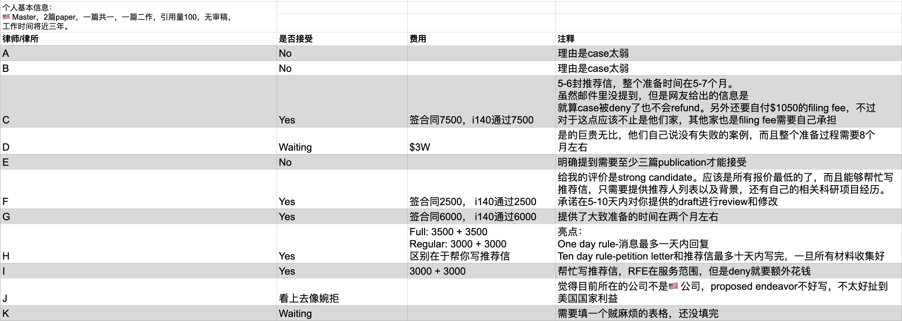

申请NIW记录帖
Updating
06/10
很早之前就听说过NIW，一直没把它当回事儿。在前公司的时候都是那些PhD毕业的同事在申请，当时偶然听到他们有在讨论审稿，论文，引用量之类的，想当然觉得与自己一Master毕业的毫无关系，也就没往这方面多想。偶然一次在现在公司和同事吃饭聊天，聊到了现在公司的绿卡政策，估摸算了下按照现在的排期就算一切进展顺利（比如PWD，PERM之类的），都得在现在公司待上个五六年才能最终拿到绿卡，而且一旦换公司，之前公司帮忙做的I140就相当于作废，需要从头来一遍所有申请过程，换句话就是说公司办绿卡所有的状态都需要和该公司绑定，一旦换了雇主，之前的都不算。如果没有这位同事切身的经历，我也不会意识到这里面的问题大的很。
硅谷的大厂美其名曰待遇好，work life balance好，但也禁不住在这几年裁员浪潮的影响下主动辞退了一大部分员工，其中有相当大一部分比例是核心的工程师岗位。撇开裁员不说，事情的真相是大厂员工的在职率其实比大部分人想象的要低得多。比如：
- Uber 1.8y
- Tesla 2.1y
- Facebook 2.5y
- Google 3.2y
- Apple 5y
- Adobe 5.3y
不管出于什么原因，把自己带入到基于大数的统计值中，一个码农在科技公司很难待得很久，以至于都熬不到公司绿卡获批的那一天。强如Adobe这种养老厂，平均也就只有～5y，按照上面算的5-6年的时间跨度，真正能让你待上这么久的公司，真的少之又少。我个人以为我在入职前司的时候能在里面待很久，毕竟当时那会儿毕业找工作已经不太友好了，能找到我对口喜欢并且在行业有点名气的公司我还是能接受的，工资低就低了点，新人嘛，学习知识和技术为主。没想到公司直接在2023年关停，打了所有人一个措手不及。所以啊，人不能想当然，你永远不知道未来会发生什么。还有一个很重要的原因是由于裁员的影响，大厂纷纷停止了PERM，这可是绿卡申请至关重要的一步，停了PERM就基本宣告了大厂普通码农申请绿卡的通道关闭了。从我和目前市面上咨询过的律师来看，最近一两年律所接了大量来自一线大厂工程师NIW的申请，大家都开始意识到求人不如求己的重要性。
那为什么大家都开始换赛道尝试NIW了呢？首先我们要了解下什么是NIW。NIW全称国家利益豁免，是EB2绿卡的一种特例（一般公司给办的就是EB2），专门针对对美国国家利益有特殊贡献的人群。一般来说在公司办EB2/EB3需要走PERM，时间大概在1到2年。而NIW可以直接省掉这一过程，直接拿到I140，确定Priority Date，进入排期。另外一个很大的优势是，NIW一旦拿到I140，它是跟着你人走的，就算换了雇主，I140不用重新申请，排期也不影响，甚至可以用该I140无限续H1B，直到排到485，拿到绿卡。这样一来，大大缩短了整个拿绿卡的时间线，并且把换工作带来的风险降到最低。说到这真的好想抽自己一巴掌，为什么不早点开始申请NIW呢？那阻碍我的原因究竟是什么呢？我想是我想当然觉得NIW门槛太高，不适合我。但其实只要做了一定的调研就会发现，这个东西真的就是一半靠自身，一半靠包装。网上没有论文没有引用没有审稿，最终获批NIW的例子比比皆是。和他们一对比，瞬间觉得自己也行了💪。
作为来🇺🇸求学读研究生，后面又找到了工作留在🇺🇸的国际生，NIW的归宿大部分都是奔着科研的方向去的。我自己挺幸运在读Master期间发了一篇还不错的文章，加上之前的一篇水刊，凑在一起也有了100的引用。虽说引用量还看得过去，但短板在于论文数量太少，好在基础条件有了，不至于一开始就一棍子打死。在如今这种留美日益艰难的局势下，何不大胆尝试下NIW，说不定就行了呢💪。
说干就干，立马一顿搜索，在小红书和一亩三分地找各种NIW相关律师推荐和极弱case通过案例，给了我极大的信心。接下来就是化身海王，各种联系律所/律师，像做这些移民相关的律师，都有个免费评估的服务，几乎我看的所有律所都有。不嫖白不嫖，一顿噼里啪啦发简历+个人学术主页。就我个人体验而言，几乎所有的律师能都做到在一个工作日内回复，告诉你评估结果，你是否有机会申请NIW，然后会附上一些文档，里面有详细的申请过程和费用清单。有的律师还主动提出了可以约一个电话来进行答疑。我觉得前期选择律师这是非常重要的一步，这个过程不仅是能对各个律所进行很好的横向对比，而且还能通过高效的对话对一些知识盲区查漏补缺，不断完善对这个事情的一个认知程度。就像我第一次和一个律所打电话，才知道了NIW的I140可以用来续H1B，虽然这可能会是一个很常规的知识，但它就是我之前所不知道的。
由于个人时间和精力有限，在查阅了网友的总结之后，选了几家出镜率比较高的律所进行咨询。我是06/07开始咨询第一家律所的，直到今天06/10，大概问了有11家律所，结果各不相同，费用也是大相径庭。简单做了一个表进行总结，方便后续自己做决定。希望有缘人也能看到这条blog，或许能帮到一些。因为在Agreement里面有提到不能disclose相关评估信息，所以律所名字做了模糊处理。

写这条blog的时候刚做完这张表格，还在考虑用哪一家。除了太贵的那几个（过万），其他其实都能接受。我个人其实很看重整个case的准备时间，像有几个和我说要半年左右的，真的基本就想pass了。有问过几个做过NIW的朋友，都说这个时间太夸张了，最多三四个月就能搞定所有材料。然而很搞笑的是几乎所有律所都不会告诉你整个时间线，要花多久时间准备材料，需要你自己多问一嘴，他们才会告诉你一个历史数据。所以这也是为什么一定要多一步电话咨询的过程。有很多问题都是一开始隐性的，只有开始做了才会发现这不是我想要的，前期功课真的要做足才能避开所有对你不利的因素。看这个样子我很有可能会选比较便宜的那一家，如果他能给到一个合理的时间范围。这个帖子会持续更新NIW的申请进度，到时候再回来看看我到底选了谁。
正好在这儿记录一些和律师沟通可以问的一些问题，也算是给自己做个笔记了。
- 关于时间线，从开始准备材料到寄出材料平均一共要多久？
- 几封推荐信？找哪些推荐人比较合适？
- 谁来负责写推荐信，SoC，proposed endeavor？是律师写还是给模版自己写？
- USCIS的filing fee是自己额外付吗？
- 如果有RFE，额外收费吗？
- 如果deny，重新filing收费吗？可以重新做filing多少次？
- 如果deny，是否有退款？退款政策是什么？
- 如果我一个月收集完成了所有我负责的材料，你们能多快寄出我的case？
- 你们历史的通过率是多少？你觉得我的case通过几率如何？
- Refile情况下filing fee是不是还要重新付？
- 之前有咨询过一个律师，有提到我现在公司不是美国公司，写proposed endeavor可能不太好写，因为不太容易和美国国家利益扯上关系，这个你怎么看？
产假结束前（06/17）希望能敲定律所，后面就专心准备材料了. 现在真的是每天晚上睡觉都在想这事儿，一想到每天都有那么多人提交NIW，队伍越来越长，越晚一天对自己越不利。所以啊，快点行动起来。
06/11
确定了律师🎉，总算迈出了第一步💪。今天一共和三个律师通了电话，最终签合同的律师其实是第一个通话的，询问了上面所列到的一些问题。他提到我的case引用数量没什么问题，他之前做过很多引用才二三十的，短板在于文章数量不够多，给我估了个80%的通过率，说要是再有一篇paper，那就是100%了。行吧，80%我觉得也可以了。反正就算不过他可以重新提交，按照统计的概率，递交两次的通过概率就变成了96%。通完电话就立马签合同汇款。下午又和其他两个律师通了电话，其实也无意和他们签约了，只是想了解了解行情。价格方面都比第一家要贵，而且处理时间也没有第一家快。我还特别询问了关于我的这个case通过率怎么样，这两家给我的回复是：没有问题+qualified。莫名给自己增加了信心😂。
（为了不产生协议纠纷，以下过程以比较通俗的术语来描述，不会照搬通信过程中的某些关键词）
签完第一家差不多是中午，等到下午6点多回的我。把双方签字的协议和一些相关材料发给了我。准备材料的第一件事是需要给律师提供一份自己的research highlight，之前讲过这个律师帮忙draft所有文书，但是前提是要对我的经历要足够了解。这个highlight也就是简单的两页来概括下以前的科研成果，以便律师对我整个人有个比较全面的了解。我准备最多两天时间来搞定这个发给他review，我觉得依靠chatgpt+txyz应该用不了多久。
06/12
今天脑海里想了下推荐人名单，大致有五个候选人，而且都比较好联系到。我觉得推荐人应该ok。和律师要了联系推荐人的邮件模版，大致用chatgpt改了改。感觉只有其中一个美国教授需要用邮件联系，其他都有微信联系方式。邮件已发，等待回复。其他推荐人目前联系了一个而且答应了，反正后面都联系下，提前和他们说下推荐信的事儿。
今天下午集中精神把两页的highlight给写了，又用AI改了改，觉得差不多就发给了律师，顺带附上了五个推荐人的信息。等律师消息。
律师下班这么晚的嘛，六点半回我邮件说Highlight写的不错，于是又让我开始填Research Statement。看了看，感觉和highlight的区别在于需要更详细描述学术贡献，做了什么，发现是什么。虽然给了模版，但还是琢磨琢磨，手敲很多文字。
06/13
早上起床收到导师微信，说可以做推荐人。
今天边带娃边起草Statement，这玩意儿自己写可真太痛苦了。直接把论文Pdf扔到chatgpt和Claude，按照要求让AI帮我写了写，还真别说，总结的相当可以。再适当给一些feedback，让AI稍微改进和润色下，已经非常有模有样了。AI大模型用来写文书感觉效率太高了，用词和语句组织真的完全不输专业文书写手。预计今晚和明天再改改就发给律师。
今天上午又和其中一个律所打了个电话。我为什么还要接电话呢，因为我还是想多了解了解整个申请过程和不同机构对我的评估。总结下来就是他们觉得我的通过率在六七成，并且愿意接受我的case。其实之前已经和这个律所通过电话，他们明确表示他们审核十分严格，只接受他们觉得可以通过的case。那这样一想，是不是他们觉得我其实好好包装下还是能过的？可人家收费太高了，而且高的离谱，本来也不是我的首选。我现在也差不多知道了自己几斤几两，要通过还是比较有希望的，现在能做的就是把所有材料尽量写的详细和专业些，后面好让律师帮忙draft更好一些。自此也让我明白了一个道理，人无论在什么时候都尽量把当下的事情尽力做好，指不定哪天以前的某些行为会对你后面的人生产生积极影响。就像如果没有当时费了老半天劲儿发了那几篇文章，现在也没有资格去申请NIW。
06/14
把写好的Statement发了一个google doc的链接，结果让我又发一个单独的doc。于是发了过去。
06/15
周末
06/16
周末
06/17
说收到文件，会仔细review一遍再联系我。
06/18 - 06/20
No update.
06/21
主动发了邮件询问timeline。催一催还是有效果的，把review的反馈给了我，周末准备改改看。
06/22
周末
06/23
周末
06/24
由于修改的地方比较多，索性晚上一鼓作气把Research Statement重写了一遍。11点左右发了过去。看来以后要隔个两天就要去主动催一下，不催不回消息。四个推荐人三个回了我，还有一个教授迟迟不回我邮件，用了之前学校邮箱又发了一封，希望能回复。
06/25
每次把材料发过去回复倒挺快，但都是模版回复。要是明天不给反馈准备发邮件跟进下。
06/27
和律师简单follow up了一下，询问进度。同时还提到了8月要出的新规，有可能对现阶段NIW的审批有影响。
06/28
律师问我消息来源是哪里，于是我就发了https://www.reginfo.gov/public/do/eAgendaViewRule?pubId=202310&RIN=1615-AC85, 但是他还是说This does not mean anything for now.